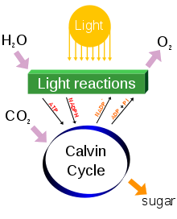

Photosynthesis is a process that converts carbon dioxide into organic compounds, especially sugars, using the energy from sunlight. Photosynthesis occurs in plants, algae, and many species of bacteria, but not in archaea. Photosynthetic organisms are called photoautotrophs, since they can create their own food. In plants, algae, and cyanobacteria, photosynthesis uses carbon dioxide and water, releasing oxygen as a waste product. Photosynthesis is vital for all aerobic life on Earth. As well as maintaining the normal level of oxygen in the atmosphere, nearly all life either depends on it directly as a source of energy, or indirectly as the ultimate source of the energy in their food.

Figure 1. Overview of cycle between autotrophs and heterotrophs.
The Figure 1 shows and overview of the cycle between autotrophs and heterotrophs. Photosynthesis is the main means by which plants, algae and many bacteria produce organic compounds and oxygen from carbon dioxide and water (green arrow).
Photosynthesis changes the energy from the sun into chemical energy and splits water to liberate O2 and fixes CO2 into sugar. Figure 2 shows a simple overview of the chemical processes in photosynthesis.
Figure 2. Photosynthesis simple overview of chemical processes.